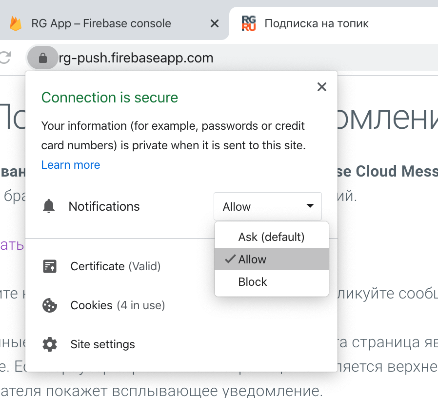

На этой странице ничего особенно делать не нужно если вы согласились на прием пуш уведомлений
при первой загрузке страницы. Если отказались, изменить параметры
можно кликнув на значок в строке адреса браузера.

При загрузке страницы, страница автоматически подписывается на прием сообщений
по топику rgru.
Чтобы опубликовать сообщение перейдите на
страницу отправки уведомлений,
которую лучше открыть в другом браузере для чистоты эксперимента.